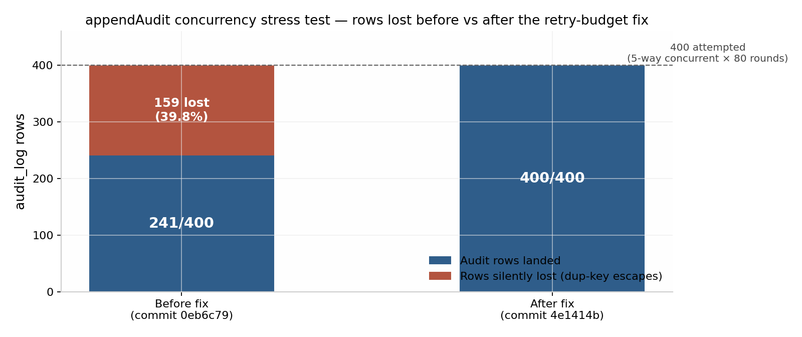

Northstar SellerOS is a bilingual (English / French-Canadian), Canada-native operating system for real-estate sellers: a multi-tenant web application in which autonomous agent "cores" draft valuations, strategies, offers and transaction plans — but every externally visible action passes through policy packs, an append-only hash-chained audit log, and mandatory human approval gates. The demonstration tenant is the deliberately fictional Harbourline Realty brokerage; no real personal data exists anywhere in the delivery.
As of 2026-08-03 the release is frozen at annotated git tag v1.0.0-pilot (commit c63286a). Every gate that can be executed without owner-only platform actions is green: 253/253 automated tests (twice consecutively), 131/131 golden + 85/85 simulator evaluations, clean typecheck/lint, clean secret / fictional-data / lockfile-host / whole-delivery scans, zero production dependency vulnerabilities, migrations proven idempotent on the actual hosted TiDB database, and a 7/7 smoke battery run against the production build backed by that same database.
Three owner-only actions remain — the agent cannot perform them and has not pretended to: (1) rotate DATABASE_URL and APP_SECRET in the platform console; (2) push the repository to the owner's git host, which turns on hosted CI automatically; (3) press the platform's publish button, then re-run the committed smoke battery against the public URL. Section 9 is the runbook for exactly these steps.
Two engineering findings are worth a colleague's attention. First, a concurrency defect class (read-max-then-insert sequence allocation under a unique index) was found by stress testing — not by luck — in both the workflow-event log (lost no rows in tests but carried the race) and the audit log (measurably lost 159 of 400 rows under 5-way concurrency before the fix; zero after). Second, validation against the intended hosted database revealed the provisioned schema had been created out-of-band with an empty migration journal; this was detected, drift-checked, and repaired with byte-exact baseline journaling, then re-proven. Both are documented with raw numbers in Sections 4–6.
Northstar SellerOS targets Canadian brokerages, with Ontario as the pilot jurisdiction. It is bilingual by construction (EN / fr-CA), multi-tenant (brokerage → team → agent hierarchy with hard tenant isolation), and compliance-forward: consent records, a suppression list, CASL-style send blocking, and policy-gated autonomy levels are first-class schema objects, not afterthoughts. The pilot scope is the seller side of the transaction: property dossiers, comparables and valuations, pricing strategy, offer intake and comparison, and transaction task coordination.
Everything demonstrable today runs on the seeded fictional brokerage Harbourline Realty (1 tenant, 4 users at validation time). A standing consent order forbids the use of any real property owner's data; historical artifacts that contained real identifiers were quarantined out of the delivery (Section 6.2).
The system is specified as 20 agent cores. Exactly 3 are wired end-to-end into the application; the remaining 17 exist as specified-but-unwired cores. This is stated plainly in every release document — the demo must never be represented as a 20-agent system in operation.
| Core | Status | What it does in the pilot |
|---|---|---|
| ConversationalLead | Wired | Lead intake conversation, consent capture, dossier bootstrap |
| OfferExtraction | Wired | Parses incoming offers into structured terms for comparison |
| TransactionCoordinator | Wired | Generates and tracks the transaction task plan |
| 17 further cores | Unwired | Specified in design; not connected to the running application — roadmap, not demo |
Model calls in this release run against a deterministic mock provider by default; no live model or third-party integration is exercised. External integrations (e.g., messaging sends) are mocks guarded by the outbox and policy layer. Nothing in the release claims otherwise.
A versioned policy pack (44 rule IDs) mediates agent action: 17 rules enforced in code, 12 partially enforced, 15 declared (documented, not yet executable). The flagship demonstrable rule is CASL-03: the seeded demo shows an SMS send to a contact with expired consent being blocked, with the block decision itself recorded in the audit chain. Approval gates are single-use: a concurrent double-decide race was stress-tested (10 rounds, single winner) and an approval, once consumed, cannot be replayed.
Tenants carry an autonomy ceiling (e.g., A2) and per-action autonomy levels. Anything above the ceiling, anything touching an external side effect, and anything flagged by policy lands in the approvals queue for a human decision with an expiry. The system is therefore "autonomous" only inside a fenced yard — the fence being the point of the pilot.
| Layer | Technology | Notes |
|---|---|---|
| Runtime | Node.js ≥ 22.22.0, npm ≥ 10 | Enforced via engines; react-router 8.3.0 requires ≥ 22.22.0 — the pin is load-bearing |
| Frontend | React 19 + Vite + TypeScript, Tailwind + shadcn/ui | Built to dist/public/ |
| API server | Hono + tRPC 11 | Bundled by esbuild to dist/boot.js; externals are Node builtins + mysql2 3.23.2 only |
| Data | Drizzle ORM; MySQL 8-compatible / TiDB | Hosted target validated on TiDB v8.5.3-serverless; 32 application tables + migration journal (33 total), 60 foreign keys |
| Auth | Kimi OAuth, JWT HS256 sessions | APP_SECRET doubles as the JWT signing key — rotation invalidates all sessions (desired) |
| Testing | Vitest (253 tests incl. DB-backed suites), golden + simulator eval harnesses | Concurrency regression tests cover both fixed race sites |
| Migrations | Committed versioned migrations via scripts/db-migrate.mjs | db:push is prohibited on TiDB (truncate-prompt hazard) — enforced by CI design and docs |
Figure 1 — request path. Every mutating route is authenticated (401 unauthenticated), tenant-scoped, policy-checked, and audit-chained; side effects drain through the outbox.
audit_log row chains prevHash → hash over canonical fields, per tenant, with a per-tenant monotonic seq under the unique constraint audit_tenant_seq(tenantId, seq). verifyAuditChain() re-validates the chain; the smoke battery runs it against live data.tenantEscape.test.ts) run inside the full suite; smoke item 8 re-verifies isolation on staging data.(tenantId, action, idempotencyKey) uniqueness; a SIGTERM → reboot cycle was proven to produce zero duplicate sends (outbox 2 → 2).npm ci # 1,143 packages, 0 vulnerabilities, public-registry-only lockfile
npm run build # vite build (frontend) + esbuild api/boot.ts → dist/boot.js
npm start # NODE_ENV=production node dist/boot.js (PORT env)
node scripts/smoke.mjs --base <url> # committed 7-check smoke battery, any targetThe release went through two engineering waves plus a final verification-and-freeze pass, each driven by independent audit rather than self-attestation. The through-line of the project rule: tests and gates may not be weakened to manufacture green results; where evidence and documentation disagree, the evidence wins.
| Phase | Commit | What happened |
|---|---|---|
| Wave 1 — release-lead mandate | 8e8868a | P0 credential-incident containment, data decontamination, false-green eval fix; clean release/security/db+CI/docs work; staging smoke 14/14; 12 release deliverables produced |
| Independent audit → STOP order | — | Clean-room audit confirmed strong core code but found 6 release blockers: private-registry lockfile URLs, banned identifiers in handoff docs, an overclaiming "production-grade" handoff, rotation marked internal instead of owner-external, CI gaps (Node 20, db:push, no evals), and no hosted CI run |
| Wave 2 — audit remediation | f3e19ac | Lockfile normalized to npmjs-only (707 URLs) + CI-blocking lockfile-host gate; Node baseline raised to ≥ 22.22.0; CI switched db:push → migration-proof and gained an evals step; truthful public handoff (3/20 wired, mocks, not production-ready); whole-delivery scan with no exemptions; canonical ZIP rebuilt with manifest + SHA-256 |
| Workflow race fix | 2e6b579 | Stress testing exposed the read-max-then-insert race in appendWorkflowEvent; fixed with retry budget 10 + jittered backoff + regression test; root cause documented (retries absorb, not remove, the race window) |
| Verifier pass | version 0eb6c79 | Independent verifier: 17/17 gates + 14/14 smoke from a brand-new extraction of the shipped ZIP |
| Audit-log race found + fixed | 4e1414b | Final review reproduced the same race class in appendAudit: 159/400 rows silently lost at 5-way concurrency. Same minimal fix pattern + regression test → 0/400 lost; full battery re-run green (253/253 ×2) |
| Hosted-DB validation + freeze | c63286a, tag v1.0.0-pilot | Validation on the real TiDB exposed an empty migration journal (schema created out-of-band); drift-checked, baseline-journaled, re-proven idempotent. Reusable smoke battery committed and proven 7/7 on the TiDB-backed production build. Release frozen and tagged |
Two scratch-file hygiene issues were also caught by the final gate runs and corrected at freeze (a leaked stress harness race-stress.ts was removed from the tracked tree and the ZIP rebuilt). They are disclosed here because the handoff standard is disclosure, not cosmetics.
| Gate | Result | Evidence location |
|---|---|---|
Install reproducibility (npm ci) | 1,143 pkgs, 0 vulns | release/DEP_AUDIT.txt (6 moderate dev-only advisories disclosed) |
Typecheck (tsc -b + tsc --noEmit) | clean | release/GATE_TABLE.md |
Lint (eslint .) | 0 errors, 5 pre-existing warnings | release/GATE_TABLE.md |
Unit + DB-backed tests (vitest run) | 253/253, twice consecutively (36 files) | release/GATE_TABLE.md |
| Evals — golden scenarios | 131/131 | release/GATE_TABLE.md |
| Evals — simulator | 85/85 | release/GATE_TABLE.md |
| Committed-secret scan | clean (298 tracked files) | release/ZERO_SECRET_SCAN.txt |
| Fictional-data gate (banned-identifier scan) | clean | release/FICTIONAL_DATA_SCAN.txt |
| Lockfile-host gate | 707/707 URLs on registry.npmjs.org | CI step + npm run gate:lockfile |
| Whole-delivery scan (incl. nested ZIP) | clean — 331 files, 1 archive | release/FICTIONAL_DATA_SCAN.txt (freeze re-run) |
| Production dependency audit | 0 high/critical | release/DEP_AUDIT.txt |
The defect was reproduced from a clean checkout before any fix was attempted, and the fix was accepted only on measured before/after evidence — 5-way concurrent audit appends × 80 rounds against a fresh migrated database:

UPDATE … last_seq+1 … RETURNING) or transactional SELECT … FOR UPDATE — are documented roadmap items in release/RESIDUAL_RISK.md, not completed work.
8.0.11-TiDB-v8.5.3-serverless) had all 33 tables but an empty migration journal — the schema had been created out-of-band, so db:migrate failed with "table already exists". The first future migration would have collided in production.db:migrate → exit 0 no-op; the CI migration proof → migrate ×2 idempotent, an inserted audit row survived the second run, table count stable at 33, proof rows cleaned up and verified gone.| Battery | Result | Target and scope |
|---|---|---|
| 14-item staging battery (independent verifier) | 14/14 | Fresh extraction of the shipped ZIP: HTTP checks, tenant isolation, blocked-CASL demo, approval single-use, restart zero-duplicate-sends, audit-chain verify, migrate/seed idempotency, graceful shutdown |
7-check committed battery (scripts/smoke.mjs) | 7/7 | Production build on Node 22.22.0 backed by the real provisioned TiDB: app shell, tRPC ping, livez, readyz (live DB SELECT 1), 401 unauthenticated, 404, OAuth 302; plus SIGTERM graceful shutdown and outbox stability (2 → 2) |
Because the smoke battery is committed and takes any base URL, the owner re-runs the identical checks against the published URL after publishing — same script, same expectations (Section 9).
During development, the live DATABASE_URL and APP_SECRET were exposed in working transcripts. Containment was executed immediately (exposure inventory, delivery scrubbing, CI secret-scan gate), but rotation is an owner-only platform-console action and remains outstanding. Release status is therefore pinned to WAITING_FOR_OWNER_ROTATION until the owner rotates both values and redeploys. This document contains no credential values; the runbook (Section 9, step 1) tells the owner how to generate and install replacements without transmitting them.
One residual fact for the operator: the runtime working tree holds a git-ignored .env with the live platform values (the preview needs it). It is verified untracked and absent from the delivery ZIP; it must never be committed, zipped, or pasted.
A standing consent order forbids any use of a real property owner's house, identity, documents, contacts, or transaction. Consequences executed and verified:
scripts/fictional-data-gate.mjs) blocks re-introduction.internal/ (design drafts, a raw git diff, notes) with in-place WITHHELD markers — they are excluded from the public delivery by design.scripts/delivery-scan.mjs), including nested archives, reports zero banned identifiers across 331 files and the shipped ZIP.Kimi OAuth issues JWT (HS256) sessions; unauthenticated API calls receive 401 (smoke-proven). Authorization is role- and tenant-scoped with CASL-style abilities; cross-tenant escape is covered by 27 dedicated tests. Every mutating action writes a hash-chained audit row; the chain was verified on live seeded data ({"ok":true}).
| Severity | Item | Honest state |
|---|---|---|
| High (gating) | Credential rotation outstanding | Owner console action; release unusable for supervised sessions until done — WAITING_FOR_OWNER_ROTATION |
| Medium | Sequence-allocation race window absorbed, not eliminated | Retry hardening proven 0/400 losses on both sites; permanent atomic allocator on roadmap |
| Medium | 17 of 20 agent cores unwired; model + integrations are mocks | By-design for the pilot; must never be demoed as live autonomy |
| Medium | Hosted CI not yet running | Workflow is turnkey and validated locally step-for-step; runs automatically once the owner pushes to their git host |
| Low | CI validates migrations on mysql:8; platform runs TiDB | Mitigated for this release by direct validation on the real TiDB (Section 5.3); swap the CI service image if TiDB-specific features are ever adopted |
| Low | No down-migrations | 0000_init is additive-only; rollback means restoring a database snapshot (owner console), never hand-written down-migrations against the live audit chain |
| Low | 6 moderate dev-only dependency advisories | Disclosed in release/DEP_AUDIT.txt; not reachable from production code paths |
Legal/compliance honesty: nothing in this release constitutes legal certification, live CASL compliance sign-off, or validated live integrations. The compliance posture demonstrated is engineering-level (gates, audit chain, consent schema, blocked-send demo) and must be represented as such.
| Item | Value |
|---|---|
| Package | northstar-selleros@1.0.0-pilot (private) |
| Freeze tag | v1.0.0-pilot (annotated) |
| Commit | c63286ad5896bd83da54b4f386461cb4437a6bce |
| Canonical ZIP | release/northstar-selleros-source.zip |
| ZIP SHA-256 | fc1cabe9ba7756f61181cfbb383cc0989f904d458bdcde78e98f3d4bc51601da |
| Platform preview version | ea827eb (preview snapshot; not published) |
| Runtime baseline | Node.js ≥ 22.22.0, npm ≥ 10 |
| Credential status | WAITING_FOR_OWNER_ROTATION |
| Artifact | Contents |
|---|---|
DEPLOYMENT.md (repo root, in ZIP) | Final deployment documentation: rotation runbook, hosted-DB validation record, CI stand-up, publish + post-publish smoke, rollback, go/no-go |
release/MANIFEST.md + SHA256SUMS.txt | Release identity, hashes, supersession notes |
release/GATE_TABLE.md | Exact gate outputs incl. concurrency root-cause analysis |
release/SMOKE_RESULTS.md | 14-item staging battery + deployment-target addendum (7/7) |
release/ROTATION_STATUS.md | Incident record, containment, owner actions |
release/CI_STATUS.md | Hosted CI = honest PENDING + workflow state + local proofs |
release/RESIDUAL_RISK.md | Risk dispositions incl. both concurrency addenda |
release/DEP_AUDIT.txt, ZERO_SECRET_SCAN.txt, FICTIONAL_DATA_SCAN.txt | Raw gate outputs |
HANDOFF.md (outer) | Truthful public handoff — 3/20 cores wired, mocks, not production-ready |
internal/ (quarantine) | Contaminated historical artifacts, excluded from delivery |
Three owner actions remain, in strict order. Everything else is done.
DATABASE_URL.APP_SECRET: openssl rand -hex 32. Paste it only into the platform console's secret field — never into chat, tickets, docs, or git.node scripts/smoke.mjs --base <preview-url> — /api/readyz must return {"status":"ready"} (proves the server reaches the database with the new URL).release/ROTATION_STATUS.md from WAITING_FOR_OWNER_ROTATION to done.git remote add origin <repo-url> then git push -u origin master --tags.ci workflow runs automatically on push: 14 steps, no secrets required (all test constants; ephemeral mysql:8 service). Expected: install → lockfile-host gate → secret scan → fictional-data gate → typecheck ×2 → lint → migration proof → 253 tests → evals (131 + 85) → build → audit.node scripts/smoke.mjs --base https://<published-url> — expect 7/7.Every release state is a git tag/SHA; redeploy a previous tag from the console. The database is additive-only with no down-migrations — database rollback means restoring a pre-release snapshot (owner console responsibility).
| # | Item | State |
|---|---|---|
| 1 | Owner rotated DATABASE_URL + APP_SECRET | ☐ WAITING_FOR_OWNER_ROTATION |
| 2 | Hosted DB validated on platform TiDB | ☑ Done 2026-08-03 (journal repaired; migrate ×2 proof) |
| 3 | Hosted CI green on owner's git host | ☐ Pending owner push (workflow turnkey) |
| 4 | Post-publish smoke 7/7 | ☐ After publish (7/7 pre-publish on TiDB-backed runtime) |
| 5 | Release frozen and tagged | ☑ v1.0.0-pilot |
| 6 | Deployment documentation delivered | ☑ DEPLOYMENT.md + this briefing |
| Path | Purpose |
|---|---|
api/boot.ts → dist/boot.js | Production server entry (esbuild bundle; externals: Node builtins + mysql2) |
api/audit.ts | Hash-chained append-only audit log; retry-hardened seq allocation (4e1414b) |
api/store/drizzle.ts | Drizzle store; workflow-event append with the same race hardening (2e6b579) |
db/migrations/0000_init.sql | The single committed migration — schema source of truth (32 tables, 60 FKs) |
scripts/db-migrate.mjs / ci-migrate-proof.mjs | Migration runner / idempotency + audit-row-survival proof |
scripts/smoke.mjs | Reusable 7-check smoke battery for any base URL |
scripts/secret-scan.mjs, fictional-data-gate.mjs, lockfile-host-gate.mjs, delivery-scan.mjs | The four content/supply-chain gates |
.github/workflows/ci.yml | Turnkey hosted CI (14 steps; runs on push to main/master/final-build/release-*) |
evals/ | Golden scenarios (131) + simulator (85) harnesses |
.env.example | Complete environment template — the only env file in the delivery |
# reproduce the environment
git checkout v1.0.0-pilot && npm ci # Node ≥ 22.22.0
# full local gate battery
npm run check && npm run lint && npm test # typecheck, lint, 253 tests
npm run evals # 131 golden + 85 simulator
node scripts/secret-scan.mjs # committed-secret gate
node scripts/fictional-data-gate.mjs # banned-identifier gate
npm run gate:lockfile # 707 npmjs-only URLs
# database (never db:push against TiDB)
npm run db:migrate # committed migrations, idempotent
node scripts/ci-migrate-proof.mjs # migrate ×2 + audit-row survival proof
# build, run, smoke
npm run build && npm start # dist/boot.js on $PORT
node scripts/smoke.mjs --base <url> # 7/7 expected
# verify a delivered ZIP
sha256sum northstar-selleros-source.zip # must equal fc1cabe9…60ea1 (SHA256SUMS.txt)End of briefing. Questions of fact should be checked against the artifacts in Table 8 — if this document and the evidence ever disagree, the evidence is correct and this document should be fixed.